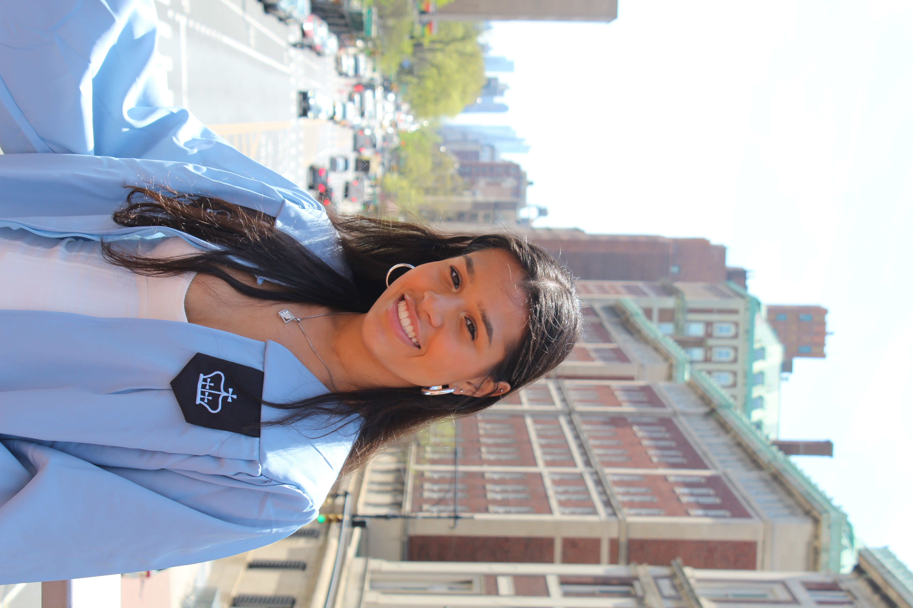

Hi, I’m Stella — a filmmaker, designer, and computer science graduate based in New York.
I graduated from Columbia College, Columbia University with a degree in Computer Science, Math, and Film. My experience spans directing and editing short films, crafting creative video media for advertisements, and coding dynamic, responsive websites (like this one!).
I also spent three years in radio programming at WKCR-FM, where I specialized in classical music. I hosted Extended Technique every Wednesday from 3–6 p.m., a program dedicated to film scores with a focus on marginalized composers, including women and composers of color. In addition, I curated programming for Cereal Music and Friday Afternoon Classical.
Outside of filmmaking and design, I spend a lot of time in the ballet world—both dancing and watching. I’m a member of the Junior Council at American Ballet Theatre, enjoy writing about dance, and have choreographed works for both live performance with Columbia CoLab and for film.
I also love bringing people together. As Community Organizer at Columbia’s Intercultural Resource Center, I spent a year planning and hosting events and was honored with a Leadership Ribbon from Columbia’s Department of Multicultural Affairs for my work. I’m also a certified bartender through the Columbia School of Mixology, and crafting cocktails has become one of my favorite creative outlets.
Want to collaborate? Let’s talk.